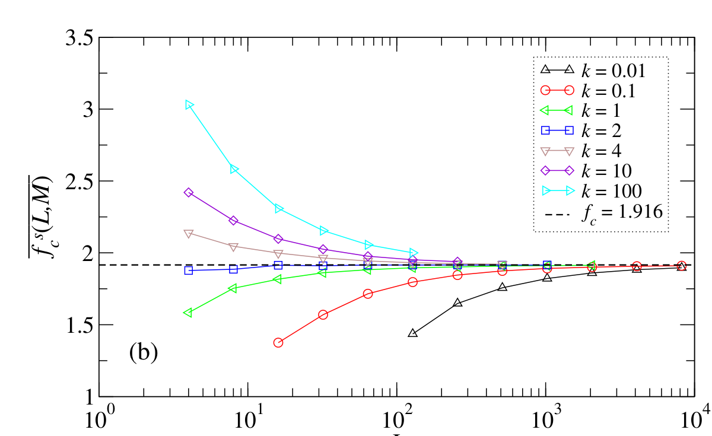
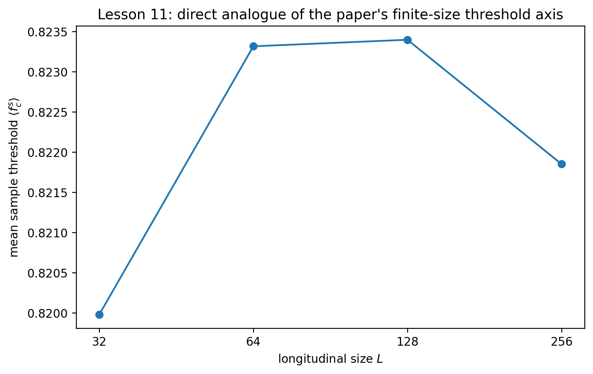
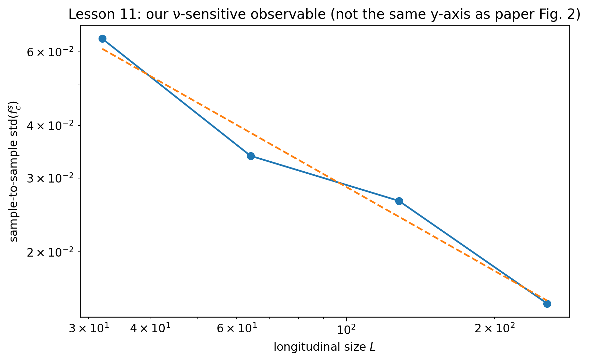

Learning Sliding Ferroelectricity / Reproduction Lab / Lesson 11
Paper2-orientedsource ↔ estimator mapping
论文 Fig.2 和我们的 ν 图不是同一 y 轴：先对齐，再区分
旧版最大的误导是把一张 finite-size critical-force 图直接贴到 ν 分析旁边，却没有告诉你论文画的是 mean threshold，而我们拟合的是 threshold distribution width。现在用一张同轴桥接图把这两个层次拆开。
先纠正 Figure 身份：Ferrero PRE 2013 的 finite-size critical-force 图是 Fig.2，不是旧页写的 Fig.4(b)。更重要的是：论文 Fig.2 的 y 轴是 finite-size mean critical force；我们用来估 ν 的 y 轴是 sample-to-sample std(fc)。它们属于同一 finite-size threshold 数据族，但不是同一个 observable，页面不能再假装“图对图复现”。
0 · 论文 Fig.2：先看有限尺寸 threshold 本身

1 · 先用同样的 L → threshold 视角看我们的数据

论文 Fig.2
mean finite-size fc vs L / aspect k。
本课 ν observable
std(fcsample) vs L。
为什么换 y 轴
sample-to-sample fluctuation 的收缩给出 ν-sensitive scaling。
2 · 真正用于 ν 的是 threshold distribution 宽度

\mathrm{std}(f_c^{sample})\sim L^{-1/\nu}
| L | mean fc | std(fc) | independent realizations |
|---|---|---|---|
| 32 | 0.819979 | 0.064453 | 48 |
| 64 | 0.823315 | 0.033882 | 48 |
| 128 | 0.823397 | 0.026466 | 48 |
| 256 | 0.821851 | 0.015060 | 48 |

SYNTHETIC FSS GOLD TEST PASS。 ν=4/3 synthetic data recovered 1.318867。
SIZE-WINDOW STABILITY GATE NOT PASSED。 νsmall3=1.557481、νall4=1.503976、νlarge3=1.709690，span=0.205713 > 0.15。因此 UNIVERSAL NU CLAIM = NOT AUTHORIZED。
3 · 这页现在应该怎么读？
先用论文 Fig.2 建立“threshold 是 finite-size quantity”的心智模型；再看我们的 mean fc(L) 作为同轴桥接；最后切换到 std(fc)，理解为什么这是另一个 ν-sensitive statistic。这样就不会再误以为两张不同 y 轴的图是在做直接 reproduction。